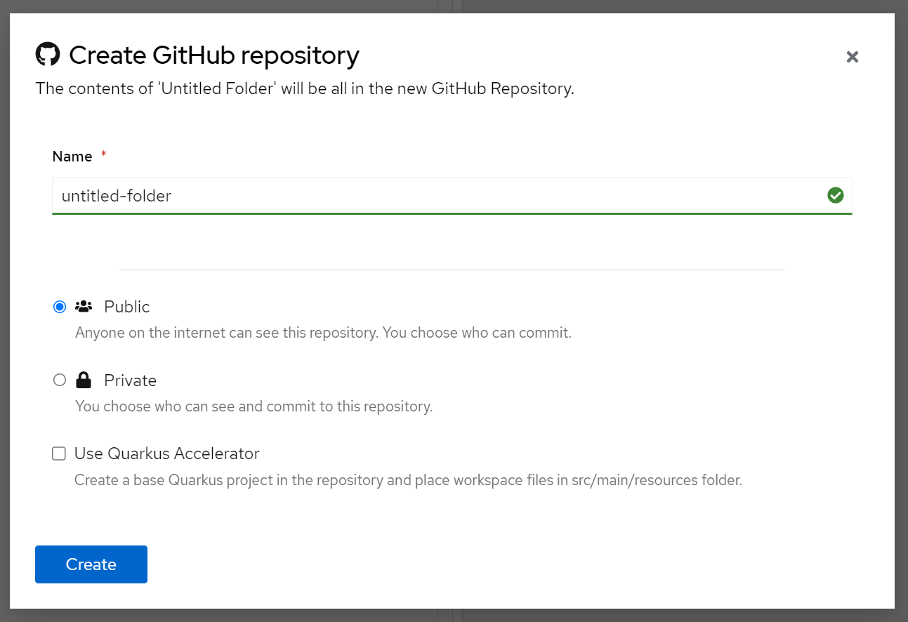

Integrating your SonataFlow project in GitHub using Serverless Logic Web Tools
The Serverless Logic Web Tools implements a web version of a Git client, enabling you to clone, create, commit, push, and pull repositories. This process synchronizes your workspaces remotely.
This document describes how you can configure the integration and synchronize your projects.
Setting your GitHub token in Serverless Logic Web Tools
You can generate a token from your GitHub account and add the token to the Serverless Logic Web Tools.
-
You have an account in GitHub.
-
Go to Serverless Logic Web Tools web application, and click the Cogwheel (⚙️) on the top-right corner of the screen.
-
Go to the GitHub tab.
-
In the GitHub tab, click the Add access token button and a window will be shown.
-
Click Create a new token option.
Ensure that you select the repo option.
-
Optionally, select gist, which enables you to import and update gists.
-
Copy the generated token and paste it into the Token field in Serverless Logic Web Tools GitHub Settings.
The contents of the tab are updated and displays that you are signed into the GitHub and contains all the required permissions.
Synchronizing your workspaces with GitHub
After your GitHub token is set, you can synchronize your workspaces with remote repositories.
-
Your GitHub token is configured in the Serverless Logic Web Tools.
For more information, see Setting your GitHub token in Serverless Logic Web Tools.
-
In the Serverless Logic Web Tools web application, create or open a workspace.
-
Add or edit the existing files in the workspace.
-
Click Share → Github: Create Repository.
-
Name your repository and set the repository as Public or Private.
-
(Optional) Select the Use Quarkus Accelerator to create a repository with a base Quarkus project and move the workspace files to
src/main/resourcesfolder.Figure 1. Create a repository for your workspace -
Click Sync → Push to update the remote repository with your local changes.
-
To get new updates from the remote repository, click Sync → Pull.
Currently, Serverless Logic Web Tools cannot resolve the merge conflicts. Therefore, ensure that you always pull changes before working on your files.
Importing a workspace from GitHub
You can import a workspace from GitHub in Serverless Logic Web Tools when you need to work from another computer or need to use someone else’s workspace.
-
Your GitHub token is configured in the Serverless Logic Web Tools.
For more information, see Setting your GitHub token in Serverless Logic Web Tools.
-
You have a repository containing workflow files.
-
Go to GitHub, find the repository with your project, and copy the repository URL.
-
In Serverless Logic Web Tools web application, paste the repository URL in the Import → From URL field and click Clone.
The page loads your imported project, defaulting to a workflow file, if present.
-
If applicable, you can push to the imported repository by clicking on the Sync → Push.
Found an issue?
If you find an issue or any misleading information, please feel free to report it here. We really appreciate it!